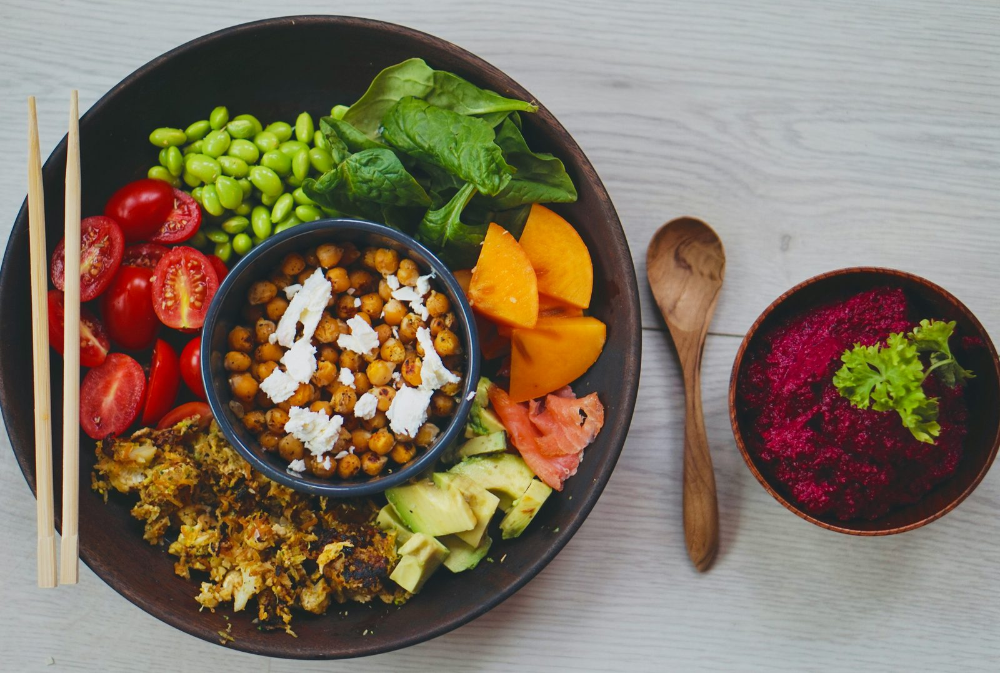

Before you can successfully lose fat, build muscle, or optimise your nutrition for health and performance, you need to know one number: your maintenance calories. Everything else in nutrition planning is derived from this single figure.
What are maintenance calories?
Maintenance calories — also called your Total Daily Energy Expenditure (TDEE) — are the number of calories you need to consume each day to keep your current body weight stable. At this intake, energy in equals energy out, and your weight neither increases nor decreases over time.
Think of it as your nutritional equilibrium point. Eating consistently below this number causes weight loss; eating consistently above it causes weight gain.
What makes up your TDEE?
TDEE is not a single number but the sum of several components:
Basal Metabolic Rate (BMR)
This is the largest component, typically accounting for 60–75% of total energy expenditure. BMR is the number of calories your body uses at complete rest to maintain essential functions: breathing, circulation, cell repair, temperature regulation, and organ function. It is primarily determined by your body size, sex, and age.
Thermic Effect of Food (TEF)
Your body uses energy to digest, absorb, and metabolise the food you eat. This accounts for roughly 10% of total energy expenditure. Protein has the highest thermic effect (20–30% of its calories are burned during digestion), followed by carbohydrates (5–10%), and fat (0–3%).
Non-Exercise Activity Thermogenesis (NEAT)
NEAT covers all the calories you burn through movement that is not structured exercise: walking, fidgeting, cooking, typing, standing, and dozens of other daily activities. NEAT varies enormously between individuals — up to 2,000 kcal per day difference — and is the main reason two people of the same size can have very different TDEEs.
Exercise Activity Thermogenesis (EAT)
The calories burned during deliberate exercise. This is often smaller than people think — a 45-minute gym session might burn 200–400 kcal for an average person — which is why you cannot exercise your way out of a poor diet.
How to calculate your maintenance calories
The most practical method is to use a validated BMR formula multiplied by an activity factor. Our calculator uses the Mifflin-St Jeor equation, which has the strongest evidence base for healthy adults:
- Men: BMR = (10 × weight in kg) + (6.25 × height in cm) − (5 × age) + 5
- Women: BMR = (10 × weight in kg) + (6.25 × height in cm) − (5 × age) − 161
Your BMR is then multiplied by an activity factor (ranging from 1.2 for sedentary to 1.9 for extremely active) to give your estimated TDEE.
How to verify your maintenance calories in real life
The most accurate method is empirical testing:
- Track your food intake consistently for 2–3 weeks using a calorie tracking app.
- Weigh yourself daily (first thing in the morning, after using the bathroom) and record the result.
- Calculate your average weekly weight at the start and end of the tracking period.
- Calculate your average daily calorie intake over the same period.
- If your weight stayed stable, your average daily intake is your true maintenance. If you gained or lost weight, adjust up or down accordingly.
This process removes the guesswork from the formula and gives you a maintenance figure that reflects your actual metabolism.
Why maintenance calories change over time
TDEE is not fixed. Several factors cause it to change:
- Body weight changes: As you lose or gain mass, your BMR changes proportionally, so your TDEE shifts.
- Activity changes: Becoming more or less active throughout the day (NEAT) significantly impacts TDEE. People who lose weight often unconsciously reduce NEAT, lowering their calorie burn.
- Metabolic adaptation: During prolonged calorie restriction, the body becomes more metabolically efficient, burning fewer calories at the same body weight. This is one reason fat loss plateaus occur.
- Age: BMR tends to decline gradually with age, primarily due to muscle mass loss (sarcopenia) if resistance training is not maintained.
Recalculating your maintenance calories every 4–6 weeks, or whenever your weight changes by more than 4–5 kg, keeps your targets accurate.
How to use your maintenance calories
Once you know your TDEE, setting your calorie target is straightforward:
- Fat loss: Eat 15–20% below maintenance (a 300–500 kcal deficit for most people)
- Muscle building: Eat 10–15% above maintenance (a 200–350 kcal surplus)
- Body recomposition: Eat at maintenance while prioritising protein and resistance training
Use our calculator to find your estimated TDEE and get the correct calorie target for your goal — the tool handles the maths and gives you macro breakdowns as well.